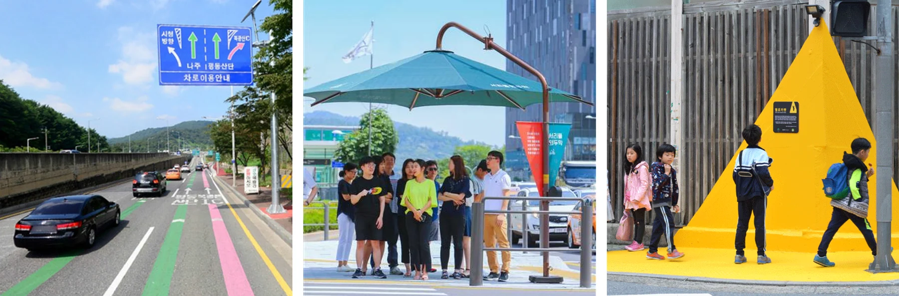

사람을 위한 공공디자인, 함께하는 공공디자인
“ 사람을 위한 공공디자인, 함께하는 공공디자인 ”
디자인은 사회의 필요한 부분이나 목적을 위한 유용한 수단으로 늘 진보되어 왔습니다. 현재 경제의 문제, 환경의 문제, 안전의 문제 또한 디자인을 통해 해결하려는 노력이 적극적으로 구현 중에 있습니다. 디자인이 사회의 수요에 맞게 변화되어 가는 것이라는 관점에서 산업화의 시대를 지나 지속가능한 시대를 맞이하고 있는 작금에 이르러서는 산업제품의 경쟁력 향상을 위한 디자인이 문제 해결을 위한 전략으로서 공공가치를 향상시키는 디자인으로 우리 사회에 공헌하기 시작하고 있습니다. 우리의 ‘공공디자인’은 바로 그 중심에서 선도적 역할을 수행하고 있고 앞으로 우리 사회에 닥칠 많은 문제들을 ‘디자인’이 상당 부분 해결할 것이고 삶의 한 문화 축으로 여러 공헌을 할 것입니다.
결과적으로 디자인이란 단순히 외형의 미적측면을 지칭하는 의미부터 치밀하게 계획된 설계, 비즈니스를 위한 창조적 아이디어, 또는 개인 생활자의 생활양상을 다루는 부분부터 한 국가의 정체성을 다루는 문화에 이르기까지 매우 포괄적이고 복합적으로 변천되어 가고 있다고 볼 수 있습니다. 이러한 디자인 확장성은 다양한 분야에서 좋은 전략으로 수용되어 디자인을 통해 공공가치를 발견하고 부가가치를 생산하며 궁극적으로 삶의 질을 향상시키는데 일조할 것입니다.
그렇다면 ‘공공디자인’이란 무엇일까? 공공디자인의 법적 의미는 공공디자인 진흥에 관한 법률 제2조에 제시된 ‘일반 공중을 위해 공공기관이 조성ㆍ제작ㆍ설치ㆍ운영하는 공공시설물의 공공성과 심미성 향상을 위한 디자인’이라고 되어있습니다. 현재 다양한 연구와 실무를 통해 공공디자인의 개념은 더욱 확장되고 있는데 광의적으로는 ‘공공가치’를 구현하기 위한 ‘디자인’이라는 의미로 이해되고 있고 우리 사회의 각 분야에서 디자인의 가치를 높이는데 공공디자인은 큰 역할을 하고 있습니다.
국가는 공공디자인 진흥종합계획과 지역 공공디자인 진흥계획을 통해 공공디자인 사업 유형을 제시하고 있는데 핵심전략을 안전, 편리, 배려, 품격이라는 공공가치로 지정하고 이를 실현하기 위한 공공디자인을 19개 추진전략과 49개의 실행과제로 제시하고 있습니다. 공공디자인 추진 과제들은 기존 타 부처 사업들의 기본 내용은 침해하지 않으면서 공공가치를 부여할 수 있는 특징들이 있어서 오히려 사업간 융합이 용이합니다.
세이프티 레인 폭염방지 그늘막 옐로우 카펫

예를 들어 한국도로공사의 ‘세이프티 레인(Safety Lane)’의 경우 고속도로의 갈림길 사고를 27%나 줄인 매우 우수한 공공디자인인데 공공디자인 진흥계획의 ‘생활안전을 더하는 공공디자인’의 ‘교통안전 디자인’에 해당하는 과제 사례로 볼 수 있는데 이렇게 기존의 도로라는 시설 인프라 사업에 ‘안전’이라는 공공가치를 디자인 전략을 통해 높일 수 있습니다. 우리가 도로에서 쉽게 볼 수 있는 ‘옐로우 카펫’의 경우도 실증연구를 통해 설치 지점에 따라 시선집중도가 79%까지 증가한 곳도 있었고 초등학생의 62.1%가 안전함을 느낀다는 우수한 결과를 볼 수 있었습니다. 이제는 전국 어디서나 볼 수 있는 폭염방지 그늘막은 처음에는 무단시설로 치부받기도 했는데 도로공간에서 국민들에게 편의시설로 사랑받으며 대한민국 공공디자인대상은 물론 유럽 그린애플어워즈등 국내외의 다양한 수상실적을 거두고 급기야 2019년 행안부의 그늘막 설치지침 지정을 통해 공식시설로 인정받기 시작했습니다. 그 외에도 공공디자인을 통해 스트레스를 저감시키고 스쿨존과 건널목의 교통사고를 줄이고 한 마을의 범죄율을 낮추기도 합니다. 또한 장애인들도 해수욕장을 쉽게 이용할 수 있도록 합니다. 이렇게 국민들이 필요로 하는 안전, 편리, 배려를 제공하는 국민체감형의 디자인이 기존 타계획을 통해 개발되기는 쉽지 않습니다. 공공디자인은 규모로는 작을지 몰라도 가치로는 매우 큰 결과를 만들어 냅니다.
거대한 국토의 인프라 시설에도 국민을 위한 공공가치를 향상시켜야 하는 부분은 매우 많습니다. 살펴보지 않으면 보이지 않지만 자세히 배려하고자 ‘’디자인‘이라는 관점으로 살펴보면 너무나 많은 개선대상들이 있습니다. 국토교통부의 다양한 정책과 사업에 공공디자인은 작은 민원해결부터 다양한 공공가치를 만들어내 국민들의 체감 만족을 할 수 있는 최적의 전략입니다.